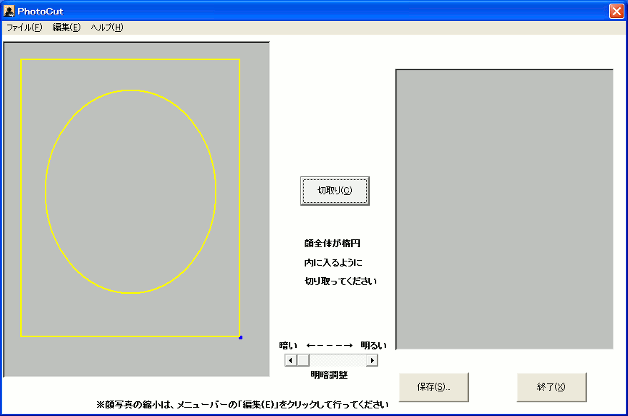
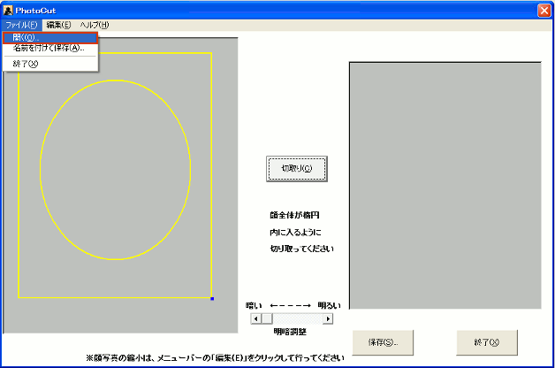
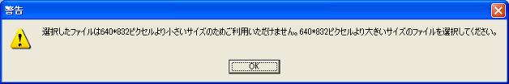

- 「PhotoCut.exe」をダブルクリックして起動させます
- 画像切取ツールが起動します

- 「ファイル(F)」から「開く(O)」を選択します

- 切取元の画像を選択し、「開く(O)」を選択します
写真は、予めデジタルカメラ等で撮影しご準備ください
<<ご注意>>
登録する顔写真には一定の条件があります。顔写真の条件はこちらをご確認ください。
条件を満たさない写真の場合には、写真の再登録を行なっていただくことがあります。
- 選択したファイルが640(横)×832(縦)ピクセル以下のサイズの場合は、エラーが表示されます

※デジタルカメラ等の設定で、640(横)×832(縦)ピクセル以上の写真を撮影し、お使いのパソコンに取り込んだ上で切り取りツールで写真を読み込んでください。
- 切取元の画像が表示されます
- 写真が大きい場合は、「編集(E)」から縮小率を選び、顔全体が画面に入る程度まで写真を縮小します。
- 画像を移動させ、顔全体が表示されるように移動します。また、できるだけ黄色い円の中心に顔の位置を合わせます
ドラッグすることで写真の移動が行え、移動時にはのアイコンが表示されます
- 黄色い枠を移動・サイズ変更させ、楕円の中に顔の輪郭が入るように微調整します
(ドラック時に のアイコンで枠の移動)
楕円中央にマウスをあわせてドラックすると、表示されます
(ドラック時に のアイコンで黄色い枠のサイズ変更)
右下枠にマウスをあわせてドラックすると、表示されます
- 黄色い円の上下と、顔の頭頂部と顎の先それぞれが一致するまで、
上記「7」「8」「9」の操作を組み合わせて調整してください
- 切り取り範囲線が画像から出ないようにし、「切取(C)」をクリックします
- 顔写真が暗い場合には、明暗調節を行ってください
（元の写真よりも暗くなることはありません）
- 切り取った画像が右の画面に表示されたら、「保存(S)」をクリックします
- 任意の場所を選択し「保存(S)」をクリック
(わかりやすいようにデスクトップ推奨)
- 「shiken.jpg」 ファイルが保存されます
(WEB申込みで利用する画像ファイルとなります)
|